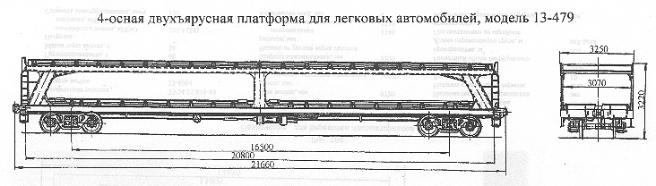

Назначение: для перевозки легковых автомобилей ("Волга", "Жигули", "Москвич", "Запорожец")
Параметры
| Номер проекта | 479.00.002 |
| Технические условия | ТУ 24-5-075-68 |
| Модель вагона | 13-479 |
| Тип вагона | 928 |
| Изготовитель | КВЗ, ДВЗ им. газеты "Правда" |
| Грузоподъемность, т | 20 |
| Масса тары вагона, т | 26 |
| Нагрузка: статическая осевая, кН(тс) |
112,7(11,5) |
| погонная, кН/м(тс/м) | 20,874(2,13) |
| Скорость конструкционная, км/ч | 120 |
| Габарит | 1-Т |
| База вагона, мм | 16500 |
| Длина, мм: по осям сцепления автосцепок |
21660 |
| по концевым балкам рамы | 20800 |
| Ширина максимальная, мм | 3250 |
| Высота от уровня верха головок рельсов максимальная, мм: | 3220 |
| Количество осей, шт. | 4 |
| Модель 2-осной тележки | 18-100 |
| Наличие переходной площадки | нет |
| Наличие стояночного тормоза | есть |
| Ширина внутренняя, мм | 3070 |
| Количество переездных плошадок, шт.: верхних |
2 |
| нижних | 2 |
| Ширина переездных площадок, мм: верхних |
3200 |
| нижних | 1168 |
| Длина переездных площадок, мм: верхних |
305 |
| нижних | 390 |
| Высота от уровня верха головок рельсов, мм: до пола нижнего яруса |
1218 |
| до пола верхнего яруса | 2890 |
| Количество перевозимых автомобилей по маркам, шт.: "Жигули" (ВАЗ 2101) |
17 |
| "Запорожец" (ЗАЗ 966) | 17 |
| "Москвич" (412) | 15-17 |
| "Волга" (ГАЗ-24) | 8 |
| "Москвич" (426/433) | 10 |
| Количество колесных упоров, шт. | 68 |
| Размер в свету между нижним и верхним ярусами, мм | 1585 |
| Год постановки на серийное производство | 1970 |
| Возможность установки буфера | нет |